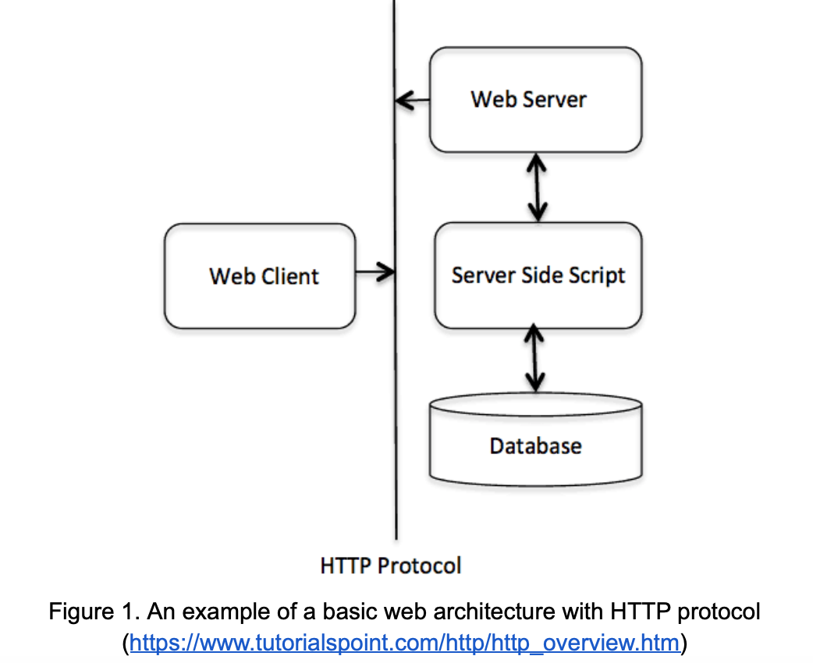
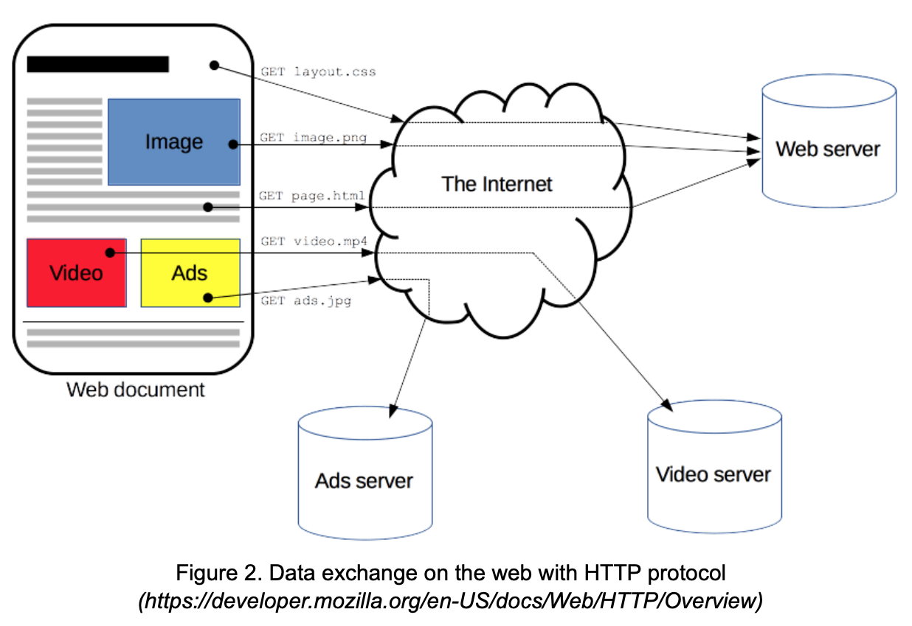
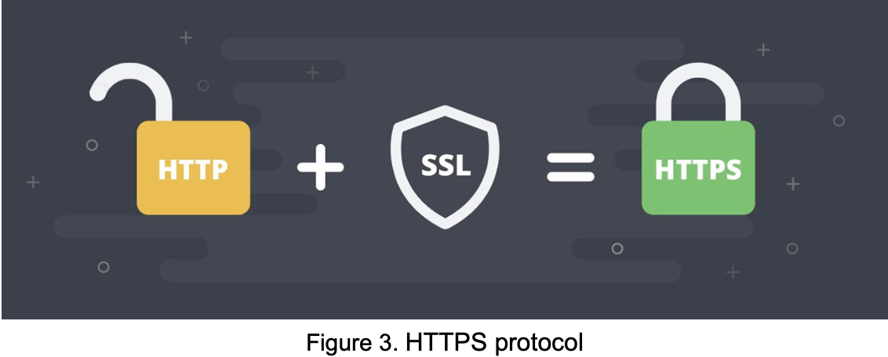
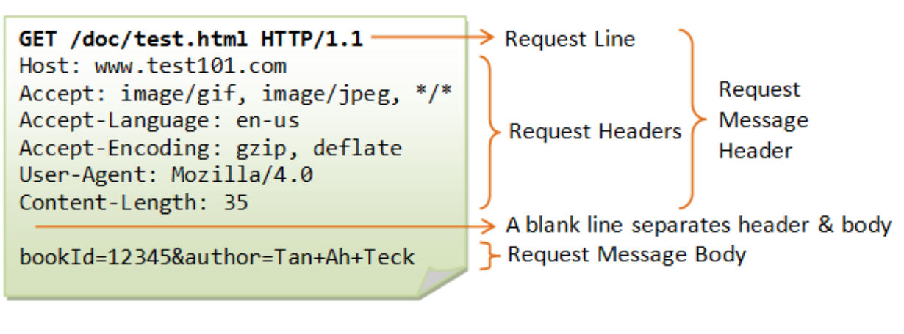
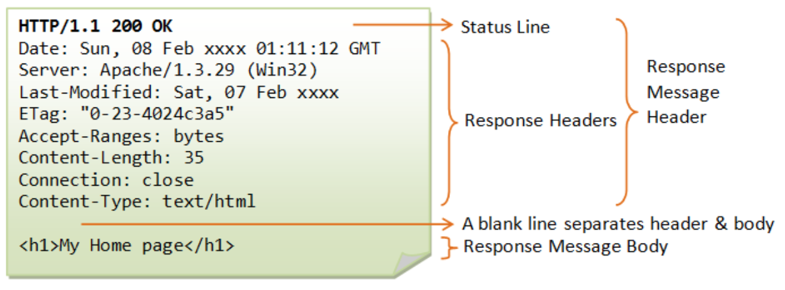

HTTP stands for Hypertext Transfer Protocol, which is an application-level protocol for distributed, collaborative, hypermedia information systems developed
by Tim Berners-Lee and his team since 1990. This protocol is the foundation for data communication on the internet. A typical example of a very basic web
application architecture with HTTP protocol is shown in Figure 1.

In other words, HTTP is a client-server protocol that allows any data exchange on the web. It starts with a request from the client (receiver), usually from
the web browser sent to the server. A complete document returned to the recipient is generally structured from the different sub-documents fetched, such as
text, layout description, videos, images, scripts, and more (Figure 2) [1].

HTTP functions as clients and servers meaning that when the client sends an HTTP message to the server, which is also called a request, the server will answer
that message, which is called response.
HTTP is basically an application layer protocol designed within the internet protocol suite that is sent over Transmission Control Protocol (TCP). It's a reliable
transport layer protocol. Due to its extensibility, HTTP can be adapted to use unreliable protocols such as the User Datagram Protocol (UDP), for example in HTTPU (
HTTP over UDP) and SSDP (Simple Service Discovery Protocol).
HTTP has several features, however, as stated by [2], the 3 basic following features, which is being discussed, make HTTP being a simple but powerful protocol:
- Connectionless: The first feature is the HTTP being connectionless. As mentioned above, the web browser (HTTP client) creates an HTTP request, sends it to the server,
and waits for the response. After receiving the request, the server processes it and then sends a response back, after which the client disconnects the connection. Obviously,
the client and server are only aware of each other during the current working session (a pair of a request and a response). Further working sessions are executed on new connections
meaning that clients and servers become new to each other. This illustrates the connectionless feature of HTTP.
- Media independence: The next basic feature of HTTP is media independence. It is implied by the fact that HTTP can send any type of data as long as the data content is able
to be handled by the client as well as the server. It's required that the content type is targeted by both the client and using the appropriate MIME type.
- Stateless: The third basic feature is HTTP being stateless. As explained above, the client and server only know about each other during a current working session. Afterward,
both of them are new to each other. Because of this characteristic of the HTTP protocol, neither the client nor the browser can retain information between different requests
across the web pages. This makes HTTP a stateless protocol.
Note that in the connecting and exchanging information process, the browsers will automatically assume that the IP address comes from the server of the website that you want to visit
without any authentication measures. Moreover, the information that is sent via HTTP protocol (including IP address, information that you enter into the website, etc.) is also not
encrypted and secure.
HTTPS represents Hypertext Transfer Protocol Secure. Basically, it is the HTTP protocol that integrates a Secure Sockets Layer (SSL) Security Certificate or Transport Layer Security
(TLS) Certificate in order to encrypt exchanged information to increase security. It can be said that HTTPS is a safer and more secure version of HTTP.
SSL and TLS are currently the leading security standards for millions of websites all over the world. Both of them use an asymmetric Public Key Infrastructure (PKI) system that uses
two “keys” to encrypt communications, including a public key and a private key. Anything encrypted with the public key can only be decrypted with the private key and vice versa.
These standards ensure that the information will be encrypted before transmitting and decrypted as receiving. This makes the hacker even if he interrupts to get the information,
he can't "understand" that information. Hence, the information is secure.

A comparison between HTTP and HTTPs is made as followed:
| Criteria |
HTTP |
HTTPs |
| Operating model |
Client - Server model using the HTTP protocol |
Client - Server model integrated SSL or TLS certificate (to ensure that no one can get and understand the information, except the client and the server) |
| Encryption |
Communications are not encrypted. |
Communications are encrypted using either SSL or TLS security technology standards, transfer encrypted information between Web servers and browsers. |
| Security level |
Not encrypting information, hence hackers can easily steal information.
Less security, information easily leaked, eavesdropped.
|
Supports the authentication of the identity (by logging into the account) of the website visited by the client through the security authentication check.
Information security, safety with users.
|
An HTTP request is defined in IBM Documentation [5] as a request made by a client, to a named host, which is located on a server. The aim of the request is to access a
resource on the server. To make the request, the client uses components of a Uniform Resource Locator (URL), which consists of the information needed to access the resource.
A correctly composed HTTP request includes 3 parts containing a request line, a series of HTTP headers, or header fields, and a message body if needed.
-
A Request line is the first line in the request message
A Request-line = A Method + URL–Request + HTTP version number
Among these above elements of a request line, the method is a one-word command that tells the server what it should do with the resource. The method can be GET, POST, HEAD, PUT, etc.
The client can use one of them to send a request to the server. The URL for the request identifies the resource on the server. Finally, the HTTP version number shows the HTTP target
to which the client has tried to make the message comply.
-
HTTP headers
The HTTP headers for a client's request contain information that a server can use to decide how to respond to the request.
HTTP headers are written on a message to provide the recipient with information about the message, the sender, and the way in which the sender wants to communicate with the recipient.
Each HTTP header is made up of a name and a value. The HTTP protocol targets define the standard set of HTTP headers and describe how to use them correctly.
-
Message body
The body content of an HTTP message can be referred to as a message body that is the actual content of the message.
When a server receives a request, it will execute one of three following actions:
- The server analyzes the received request, maps the request to the file in the server's document set, and gets back the request file to the client;
- The server analyzes the received request, maps the request into a program on the server, executes the program, and gets back to the client the result of program execution;
- The server is unable to respond to the request from the client and gets back an error message. The following is an example of this case.

HTTP Request Methods are methods to indicate the desired action to be performed on the target resource. HTTP defines a set of request methods, the client can use one of them to create
a request to the HTTP server. Some common methods that are often used are as follows:
- GET: This method is used to get back information from a given server with a target resource;
- POST: This method requires the server to accept an entity attached in the request identified by URL, for instance, customer information, upload file, etc;
- PUT: if the URL doesn't point to an existing resource, the server can create a resource with that URL;
- DELETE: Removes all the current representations of the target resource given by;
- PATCH: Apply for a partial revision of target resources.
Similarly, the HTTP Response is also defined in IBM Documentation [6] as a response made by a server to a client. The aim of the response is to provide the client with the resource it requested,
or inform the client that the action it requested has been carried out; or else to inform the client that an error occurred in processing its request.
An HTTP response also contains three parts: a status line, a series of HTTP headers, or header fields, and a message body, which is usually needed. These parts of an HTTP Response are described
in more detail below.
-
A status line is the first line in the response message;
A Status line = The HTTP version number + A status code + A reason phrase;
In which, the HTTP version number shows the HTTP target to which the server has tried to make the message comply, the status code is a three-digit number indicating the result of the request, and the reason
phrase (status text) is human-readable text that summarizes the meaning of the status code.
-
HTTP headers
The HTTP headers for a server's response contain information that a client can use to find out more about the response, and about the server that sent it. This information can assist
the client with displaying the response to a user, with storing (or caching) the response for future use, and with making further requests to the server now or in the future.
-
Message body
The message body of a response may be referred to for convenience as a response body. Message bodies are used for most responses. The exceptions are where a server is responding to
a client request that uses the HEAD method and where a server is using certain status codes.
For a response to a successful request, the message body contains either the resource requested by the client or some information about the status of the action requested by the client. For a response
to an unsuccessful request, the message body might provide further information about the reasons for the error, or about some action the client needs to take to complete the request successfully. An example is below.

As stated in the Learning HTTP Tutorial [8], the HTTP header provides required information about the request or response, or about the object sent in the message body. An HTTP header consists
of its case-insensitive name followed by a colon (:), then by its value. Whitespace before the value is ignored [9].
The HTTP message headers can be categorized based on distinct criteria such as context-wise based, how proxies handle them, etc. Here, four types of HTTP headers context-wise are listed according to [8]:
- General-header: Can be applied for either request or response messages.
- Client Request-header: Only applied for request messages.
- Server Response-header: TOnly applied for response messages.
- Entity-header: Define meta-information about the entity-body or, if nobody is present, about the resource identified by the request.
HTTP Headers play an important role in client-server communication by letting the client and the server pass additional information with an HTTP request or response. HTTP headers are mainly intended for the communication
between the server and client in both directions.
The HTTP Status Code is an element in a status line of a server response. It includes a 3-digit integer where the first digit defines the class of response and the last two digits do not have any categorization role.
The first digit can be one of the following values:
- 1xx (100, 101): Informational (meaning that the request has been received and the process is continuing: 100 Continue, 101 Switching Protocols).
- 2xx (200-206): Success (meaning that the action was successfully received, understood, and accepted: 200 OK, 201 Created, 202 Accepted, 203 Non-authoritative Information, 204 No Content, 205 Reset Content, 206 Partial Content).
- 3xx (300-307): Redirection (meaning that further action must be taken in order to complete the request: 300 Multiple Choices, 301 Moved Permanently, 302 Found, 303 See Other, 304 Not Modified, 305 Use Proxy, 306 Unused, 307 Temporary Redirect).
- 4xx (400-417): Client Error (meaning that the request contains incorrect syntax or cannot be fulfilled: 400 Bad Request, 401 Unauthorized, 402 Payment Required, 403 Forbidden, 404 Not Found, 405 Method Not Allowed, 406 Not Acceptable,
407 Proxy Authentication Required, 408 Request Timeout, 409 Conflict, 410 Gone, 411 Length Required, 412 Precondition Failed, 413 Request Entity Too Large, 414 Request-URL Too Long, 415 Unsupported Media Type, 416 Requested Range Not Satisfiable,
417 Expectation Failed).
- 5xx (500-505): Server Error (meaning that the server failed to fulfill an apparently valid request: 500 Internal Server Error, 500 Internal Server Error, 502 Bad Gateway, 503 Service Unavailable, 504 Gateway Timeout, 504 Gateway Timeout).
Status codes are issued by a server in response to a client's request made to the server. They play the role to indicate whether a specific HTTP request has been successfully completed.